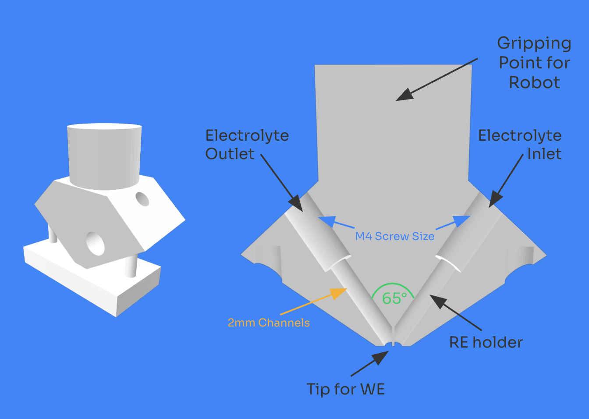
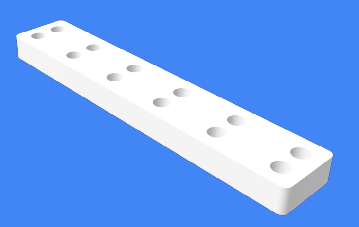
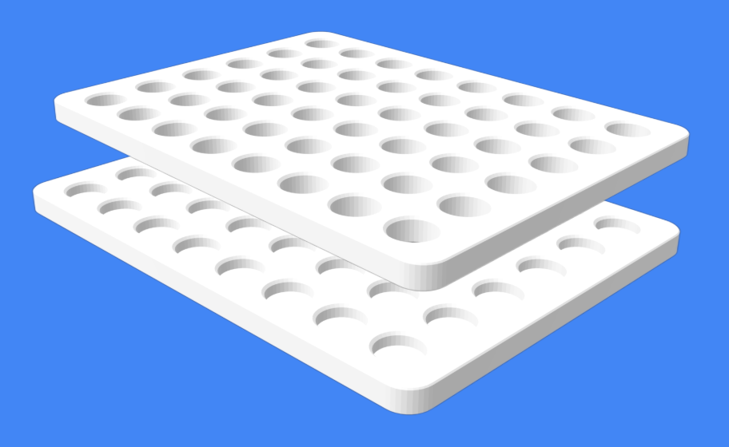

NorthIDE Robotics Workflow & CAD @ MIT's Electrochemical Energy Lab

Photo Courtesy of North Robotics
Project Goal
The main goal was to assemble, wire, calibrate, and program the North Robotics system for automated vial handling and ink preparation. Initial tasks included updating the software to the latest NorthIDE version, which required migrating project files and reconfiguring robotic modules. This fixed the compatibility issues that I was having with controllers and pump modules. The next task was to implement mechanical integration of all modules by aligning the pipette remover, carousel, and vial racks to ensure consistent pickup and placement. System calibration and troubleshooting included tuning X, Y, and Z-axis offsets for reliable vial gripping and debugging powder dispenser/Sonicator connection issues.
System in Action
a. Robot locates target vial from rack
b. Moves vial to vial clamp
a. Gripper removes cap and stores it
b. Robot moves out of way for powder dispensing
a. Carousel moves to powder dispenser position
b. Dispenses target powder amount into vial
a. Picks up fresh pipette
b. Aspirates desired volume from water vial
c. Dispenses into target vial
d. Discards pipette
a. Step #4 repeats
b. Recap vial
a. Places vial in sonicator
b. Runs for desired time
a. Retrieves vial from sonicator
b. Uncaps vial
c. Step #4 repeats
d. Recaps vial
a. Places vial back in sonicator
b. Runs for second timed cycle
a. Home vial and robot
North Robotics System – CAD Hardware Extension

Automated Probe Measurement: Designed CAD models and printed both the probe and a dedicated probe holder. The robot retrieves the probe from the holder, performs ORR measurements at each position, and returns it after use.


Ink Dropping Station: Designed a holder for 12 electrochemical testing substrates (working electrode disks). The robot maps to each position and dispenses ink with a fresh pipette for each sample.
Second Vial Rack: Designed and built a custom CAD vial rack to store vials. It holds the main set of vials while the company-supplied rack is placed in the sonicator.